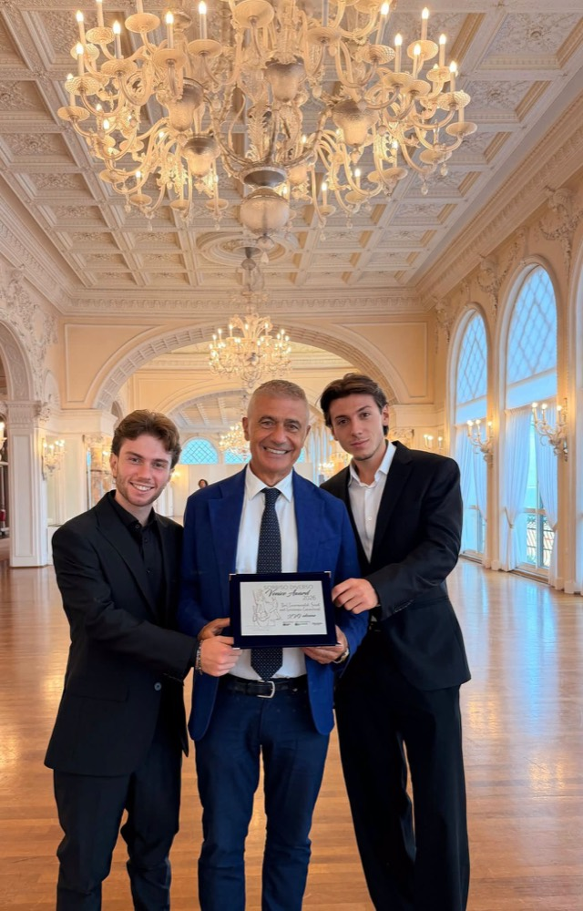
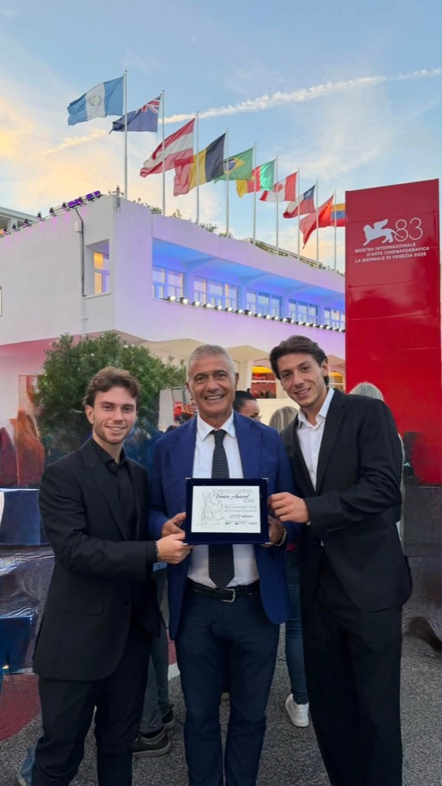
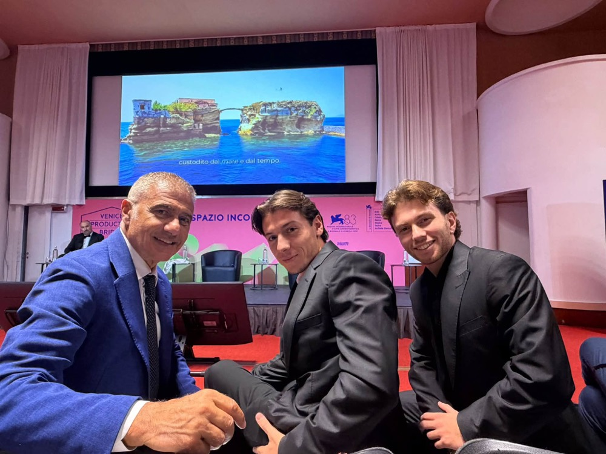
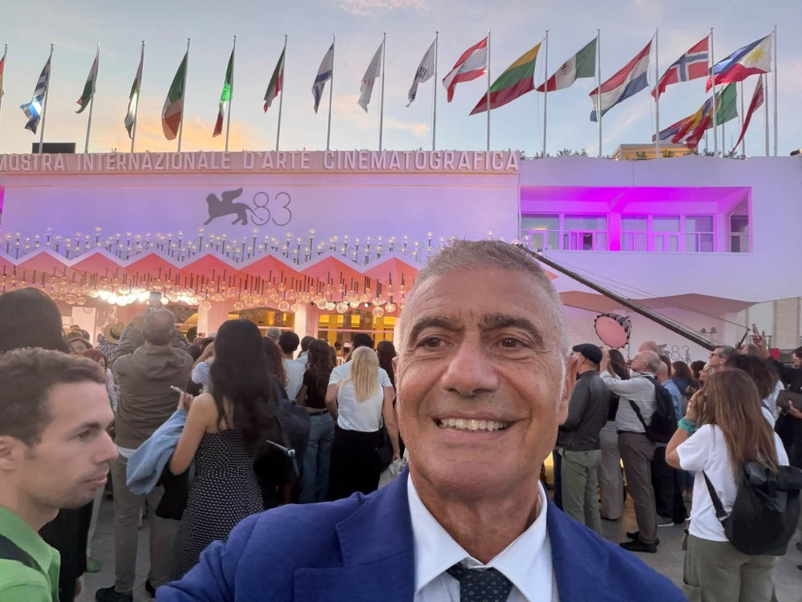

Press
Per chi scrive di noi.
Qui sotto ci sono gli articoli usciti sulla rete, i loghi, le foto in alta risoluzione e i contatti. Per un'intervista o per un materiale che non trovi scrivi a info@ecodigital.it.
Ne hanno scritto
Agenzie, quotidiani, radio e televisioni, dal più recente
77 articoli, lanci e dirette dal 2022 a oggi. Ci sono askanews, Italpress, Il Sole 24 Ore, Il Tempo, Libero Quotidiano, Quotidiano.net, Radio Radicale, Key4biz, LiveSicilia, BlogSicilia, Quotidiano del Sud, Affaritaliani, Appia News, Capri Press, Sardegna Reporter, TeleAmbiente e i comunicati della Fondazione UniVerde. I link portano al sito della testata. Dove manca il giorno esatto abbiamo lasciato mese e anno, e dove la pagina non risponde più lo abbiamo scritto sotto la voce.
2026
2025
2024
2022
Materiali per la stampa
Loghi, foto e contatti, pronti da usare
Chi siamo, in breve
EcoDigital è una rete civica nata nel 2021 su iniziativa di Alfonso Pecoraro Scanio, presidente della Fondazione UniVerde e già ministro dell'Ambiente. Tiene insieme la transizione ecologica e quella digitale. Cerca in giro per l'Italia comuni, imprese e startup che hanno già risolto un problema e porta le loro soluzioni in incontri pubblici. Dal 2021 ha fatto 56 tappe, da Milano a Catania, con giovani, startupper, sindaci e amministratori locali. All'Assemblea Regionale Siciliana ha fatto nascere il primo intergruppo parlamentare EcoDigital.
I loghi
- Logo istituzionale, SVG
- Logo istituzionale, PNG 2000 px
- Logo per fondi blu, PNG 2000 px
- Logo verticale, PNG 2000 px
- Logo tondo, PNG 2000 px


Il logo non va ricolorato né allungato. Sui fondi blu si usa la versione in negativo, sulle foto e sulle sfumature quella tutta bianca.
Contatti
- Scrivi a info@ecodigital.it per interviste, materiali e per il video sulle Aree Marine Protette.
- Referente stampa: da confermare.
- Portavoce della rete: Alfonso Pecoraro Scanio, promotore di EcoDigital e presidente della Fondazione UniVerde.
- Marketing e comunicazione del canale: Alessandro Di Capua.
Rispondiamo in giornata quando possiamo. Per le richieste con scadenza scrivilo nell'oggetto della mail.
Le foto di Venezia, 11 settembre 2026
Quattro foto libere per la stampa, 1000 px sul lato lungo. Credito obbligatorio «Foto: archivio EcoDigital». Chi ha bisogno del file originale lo chieda a info@ecodigital.it.








Le foto degli incontri sono dell'archivio della rete e dei volontari che le hanno scattate. Per le immagini delle altre tappe vedi i crediti fotografici.
Prossimi appuntamenti
Vuoi seguirci a Rimini?
Il calendario delle tappe è nella pagina Tappe, le ultime cose fatte nella pagina Notizie. Per accrediti e appuntamenti scrivi a info@ecodigital.it.